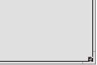

Polski
Polski Català
Català Deutsch
Deutsch English
English Español
Español Français
Français Italiano
Italiano Magyar
Magyar Português
Português Português (Brazil)
Português (Brazil) Română
Română Slovenčina
Slovenčina Suomi
Suomi Svenska
Svenska 中文 ［中文］
中文 ［中文］ Русский
Русский Українська
Українська 日本語
日本語| Spis treści |
|
Easy moving and resizing Stack & Tile Open and save panels Replicants |
Haiku's GUI
Haiku's graphical user interface is an integral part of the system. Unlike Unix-based operating systems, there's no separate window manager and booting just into a command line shell is not possible. Haiku's focus being on the desktop user, this is just not considered necessary.
As you probably have experience with other graphical environments, let's skip over the standards like menus, right-click context menus, drag&drop etc. Let's have a look at the few unique aspects of Haiku's GUI instead.

There are only a few things in Haiku's GUI that aren't obvious and deserve an explanation.
The Deskbar is Haiku's "Start" menu and taskbar, if you will. See topic Deskbar.
- The yellow tab offers more than just a program's name or a document's filename:
- You can move it by holding the SHIFT key while dragging it to another position, enabling you to stack a number of windows and conveniently access them by their named tab.
- You minimize a window with a double-click on its tab (or with CTRL ALT M). A such hidden window can be accessed by its entry in the Deskbar or the Twitcher.
- You can send a window to the back with a right-click on its tab (or its border).
The close button.
The "zoom" button (or CTRL ALT Z). In most applications, this will expand a window to maximum size. It doesn't have to, however. Tracker windows, for example, will resize to best fit the contents.
The window border. Left-dragging moves the window, right-dragging resizes.
The resize corner.
 A quick way to move or resize windows
A quick way to move or resize windows
Moving and resizing windows is a large part of interacting with several concurrently running applications. Instead of aiming at the small yellow title tab or the even tinier window border, there's a more convenient way to move a window. Also, additionally to its small size, the resize corner has another limitation: It only allows resizing at and in the direction of the lower right corner.
Right-dragging a border for resizing works, but again you'll have to aim carefully.
To address these issues, Haiku provides a neat solution using the window management key combo CTRL ALT and the mouse. See also chapter Shortcuts and key combinations for more shortcuts concerning window management.

Holding down CTRL ALT will highlight the window borders nearest to the mouse pointer. Move the mouse in the direction of another border to change the target. Click and dragging with the right mouse button will resize the window along the highlighted border(s).
Hold down CTRL ALT and click and drag with the left mouse button anywhere in a window to move it around. A quick click with the right mouse button sends it to the back.
Stack & Tile
Haiku's user interface provides a unique feature that puts the fact that windows have a yellow tab instead of a full-width title bar to perfect use. It's called "Stack & Tile".
In the example below, a Tracker window with bookmarks is tiled to the left of a WebPositive window, which itself is stacked with another Tracker window showing the source folder haiku. In this animation, the user clicks on the tabs of the stacked windows to alternately bring one or the other to the front.

Connected like this, the group of windows can be moved and resized together - a nice arrangement to work in a more project centric environment. Instead of looking for the right browser window with documentation, editor and Tracker windows and maybe a related email concerning one project you are currently working on, just stack&tile them together.
Doing the actual arranging of windows is easy: Hold down OPT while dragging a window by its tab close to another window's tab or border until it's highlighted and release the mouse button.
Stack & Tile consists of two related parts.
 | "Stacking" is putting windows on top of each other, automatically moving the yellow tabs into position. |
 | "Tiling" means gluing windows horizontally or vertically together. |
Separation is done in the same way, by holding OPT while dragging a window by its tab out of the group.
Open and save panels
When opening or saving a file from any application, a panel like this opens:

It has all the usual things: A list of files of the current folder to choose from, in case of a save panel, a text field to enter a filename and a pop-up menu for different file formats and their settings.
You can enter parent folders with the pop-up menu above the file listing.
If you already have a Tracker window with the location for a file open, you can simply drag either any file or the folder-representation (i.e. the symbol to the far right in its menu bar) into the panel. This changes the panel to that new location.
Keyboard shortcuts
Many shortcuts in open and save panels are the same used in Tracker. Besides the commands that are also available through the menu, there are a few not that obvious:
| ALT N | Creates a new folder. | |
| ALT E | Lets you rename the selected entry. | |
| ALT ↑ | Moves into the parent folder. | |
| ALT ↓ or ENTER | Moves into the selected folder. | |
| ALT D | Takes you to your Desktop. | |
| ALT H | Takes you to your Home folder. |
Favorites and recent folders
The menu in open and save panels provides recently visited folders and favorite locations that you can set up yourself. As indicated by the little arrow, you can also use these locations to navigate further down the hierarchy via submenus.

To add a Favorite, you simply navigate to your destination and choose . From now on it will appear in every open/save panel. To remove a Favorite, choose and delete its entry.
All Favorites are kept in /boot/home/config/settings/Tracker/Go/. So you might as well add and remove links to files and folders there directly.
Replicants
Replicants are small self-contained parts of applications that can be integrated into other programs. Provided Deskbar's option to is activated, you'll recognize a replicantable part of an application by its small handle, normally in the bottom right corner:
The most prominent place that accepts Replicants is the Desktop: You simply drag & drop the little handle onto it. From now on it's part of the Desktop and the Replicant's originating app doesn't have to be started for it to work.
A right-click on a Replicant handle offers a context menu to show the originating app's window and to .
Examples for replicatable applications are the graphs of the ActivityMonitor, the Workspaces applet or DeskCalc.